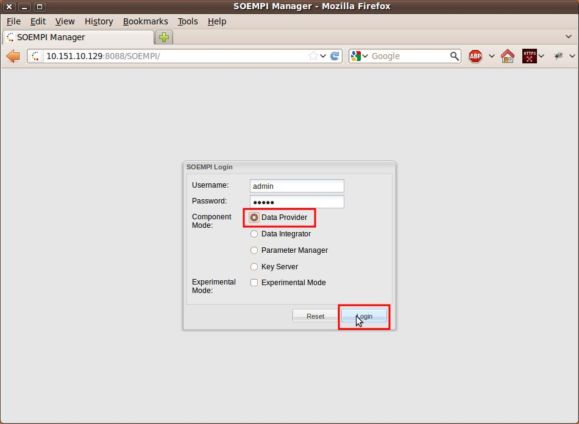
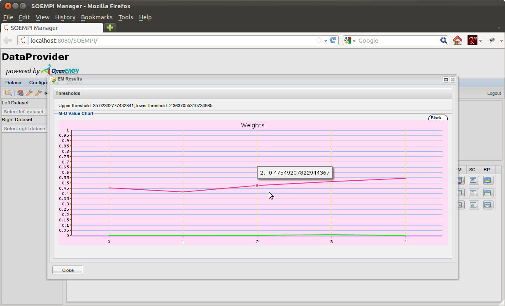

Record Linkage Experiments on the local SOEMPI
You supposedly imported at least two datasets to play with (in case of a PRL a Key Server component is needed,
but that can be configured as the local machine itself).
A wizard is accessible at the Data Providers which guide through the configuration steps:
import guide.
- First please log in to the data provider if you haven't done so.

- Click on the Perform Match toolbar icon to get to the Match View.

- You will be presented the Match View page. You can perform record linkage (match) between two imported datasets here
using the controls in the headerline of the view, and you can see all of the performed record linkages in the listview below that.
In this guid we will perform a record linkage and see what results can we display about finished matches.
- Let us first specify the dataset which considered to be on the left side of the linkage.
Selecting the dataset all of the drop-down controls which offer selection of fields of the left dataset.
This includes the left "original id field" selector on this MatchView, field selectors in various dialogs of
blocking and matching configuration related user interfaces.
- Let us then specify the dataset which considered to be on the right side of the linkage.
Selecting the dataset all of the drop-down controls which offer selection of fields of the right dataset.
This includes the right "original id field" selector on this MatchView, field selectors in various dialogs of
blocking and matching configuration related user interfaces.
- Specify a unique table name for the record pair links for database persistence.
This will be stored in a field of the PersonMatch entity related to the match and there
will be an actual table created (prefixed by "tbl_lnk_")

- Select the Blocking algorithm you want to use during the record linkage procedure from the drop-down list.
- Select the Matching algorithm you want to use during the record linkage procedure from the drop-down list.
- Check the "Check True Matches checkbox if your datasets have their own inherited Id fields and you want to specify
these "original id fields" in the drop-down boxes below.
- If your datasets have their own inherited Id fields, you can select
the left "original id field" in the drop-down box if you want do so.
- If your datasets have their own inherited Id fields, you can select
the right "original id field" in the drop-down box if you want do so.
- If you don't want to persist the record pairs and you are only interested in the end result of the EM algorithm
please check this box. This is highly advised if you are doing a non-blocking type record linkage on large datasets.
Indication that no persistence needed can dramatically decrease runtime and memory usage.
- Click on the Match button to finally start the procedure.
- An AJAX wait icon will indicate that the computation is under progress.
- At the end the AJAX wait icon will disappear and a new row will appear in the listview.
You can examine several properties of the performed record linkages using the icons at the end of the rows of the list view.
-
Match Column Informations: information about the left and right side properties participated in the record linkage
- Click on the "View Match Column Informations" Icon
- Examine the upcoming modal dialog which presents the available information:
-
EM information chart: m and u output values of the EM run
- Click on the "View EM Results of this match" Icon
- Examine the upcoming modal dialog which presents the available information. The red line marks the m, while the green line marks u values.

-
Match Record Pair Score chart: evenly samples the record pairs (ordered by weight) and shows the rough shape of the scores
- Click on the "View score chart of the match" Icon
- Examine the upcoming modal dialog which presents the available information. The two green bars mark the lower/upper bounds.
-
Match Record Pair list: enumerates pages of record pairs in score order. It is possible to view the values of the left or right record in a pair.
- Click on the "View List of Record Pairs" Icon
- Examine the upcoming modal dialog which presents the first page of the record pairs.
- Click on the pager button which brings the view to the last page (highest scores).
- By clicking on the buttons in the en of the rows you can view the attributes of the left or the right records of the particular pair.